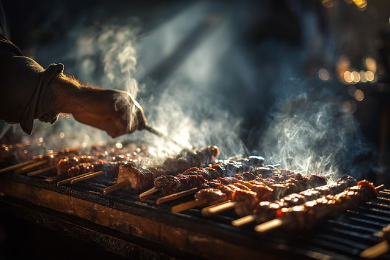
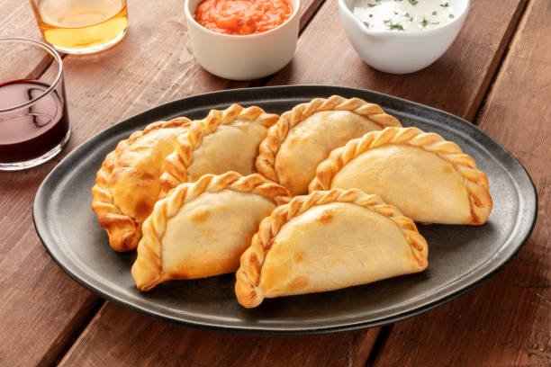
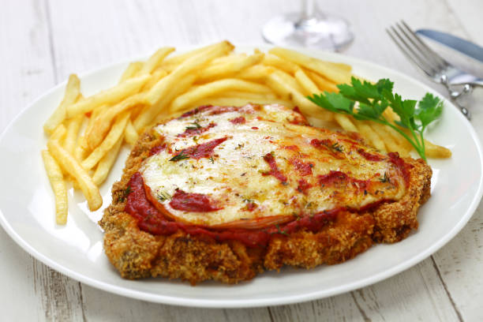
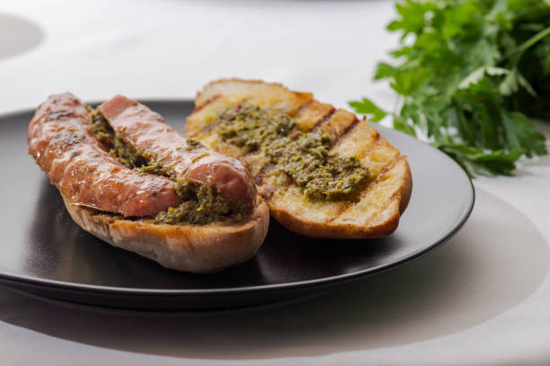
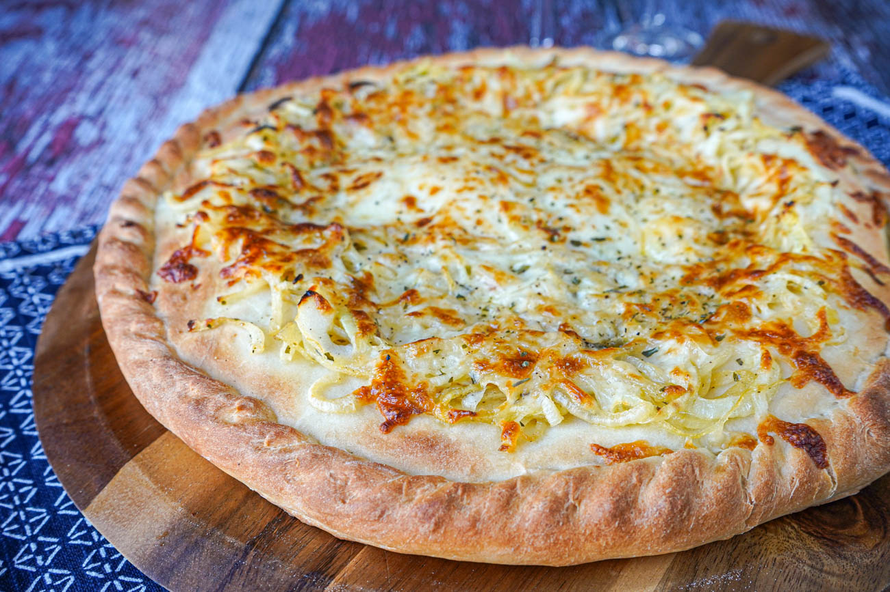

La gastronomía argentina es una de las más reconocidas en América Latina y el mundo, famosa por su carne de res, sus asados, su pizza, su choripan, su dulce de leche y sus empanadas.
Algunos de los platos mas representativos son:

El asado es uno de los platos más tradicionales de Argentina, preparado a la parrilla.

Las empanadas argentinas pueden ser de carne, pollo o jamón y queso.

La milanesa es carne empanizada y frita, muy popular en el país.
El dulce de leche es un postre tradicional hecho a base de leche y azúcar, usado en muchos postres argentinos como los alfajores.

El choripán es un sándwich de chorizo a la parrilla, muy popular en eventos deportivos y asados.

La pizza argentina tiene su propia estilo y recetas únicas, con ingredientes locales y sabores distintivos.